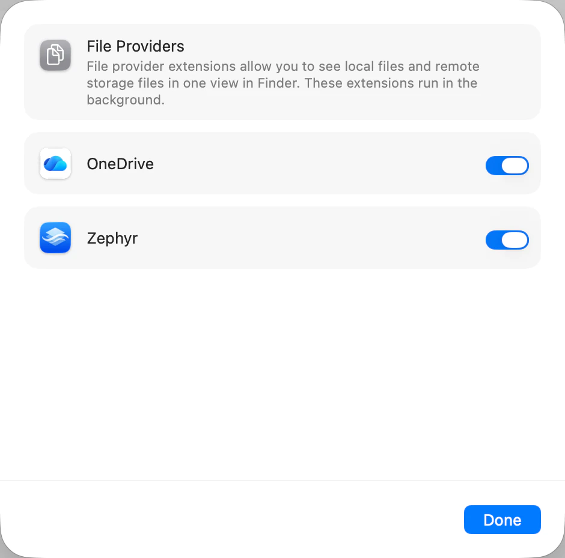

macOS fragt dich, nicht Zephyr, ob eine App Dateien im Finder ablegen darf. Solange du Zephyr unter „Dateianbieter“ nicht eingeschaltet hast, wird ein verknüpftes Konto zwar synchronisiert, erscheint aber nie.
Installiere Zephyr, statt es aus einem heruntergeladenen Disk-Image herauszuziehen. macOS führt eine heruntergeladene App aus einer eigenen temporären Kopie aus und registriert dafür keinen Dateianbieter, sodass Zephyr gar nicht erst in der Liste „Dateianbieter“ auftaucht. Siehe Wenn deine Dropbox nicht im Finder erscheint.
Verknüpfe zuerst ein Dropbox-Konto. Zephyr erscheint erst in der Liste „Dateianbieter“, wenn es ein Konto anzuzeigen gibt. Hast du noch keines verknüpft, ist der gesuchte Schalter also noch nicht da. Siehe Dein Dropbox-Konto verknüpfen.
Wähle Apple-Menü > Systemeinstellungen, klicke in der Seitenleiste auf „Allgemein“, klicke auf „Anmeldeobjekte & Erweiterungen“ und dann auf „Dateianbieter“.
Schalte Zephyr ein.
Öffne ein neues Finder-Fenster. Deine Dropbox erscheint in der Seitenleiste unter „Orte“. Ist sie nicht da, blendet der Finder möglicherweise Cloud-Orte aus – siehe Wenn deine Dropbox nicht im Finder erscheint.

Hinweis: Zephyr bemerkt das und fragt nicht mehr nach, sobald du es erledigt hast. Wird die Warnung weiterhin angezeigt, klicke auf das Zephyr-Symbol in der Menüleiste – die Prüfung läuft jedes Mal erneut, wenn der Bereich geöffnet wird.
Zephyr beobachtet Dropbox auf Änderungen. Der Finder erfährt deshalb nur von einer auf einem anderen Gerät vorgenommenen Änderung, solange Zephyr läuft. Wenn es bei der Anmeldung geöffnet wird, ist das ohne dein Zutun gewährleistet – siehe Zephyr im Hintergrund laufen lassen.